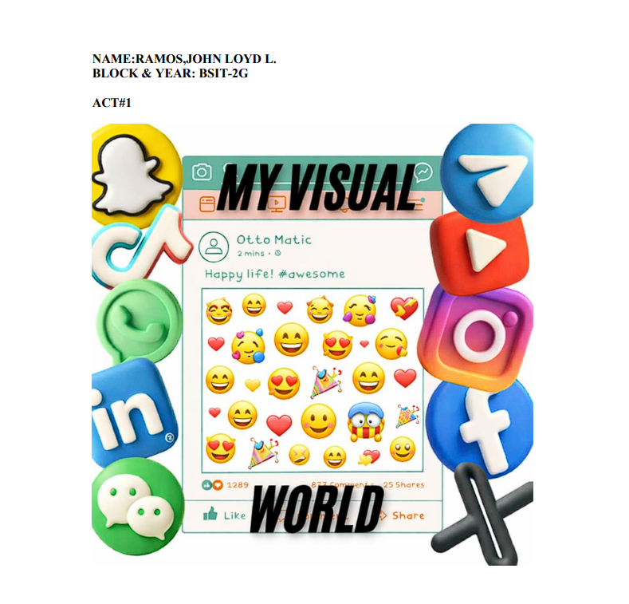
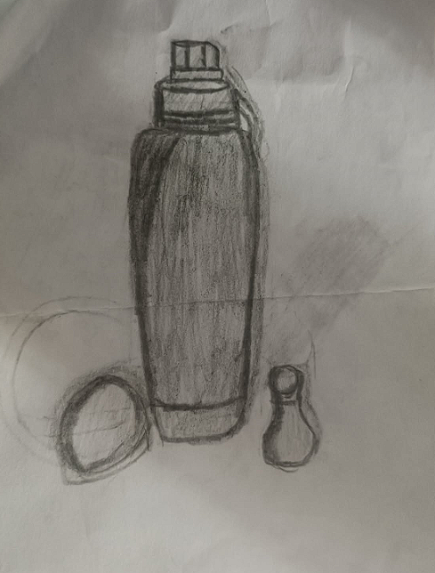
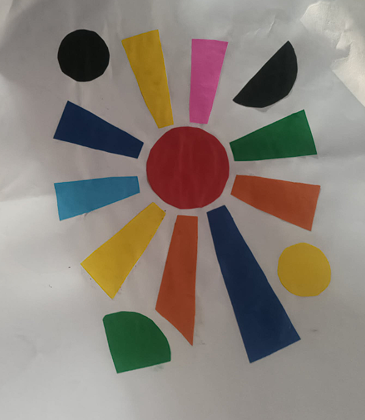
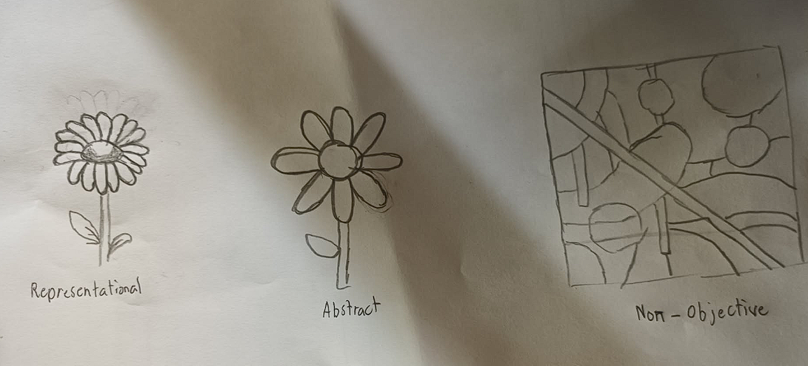
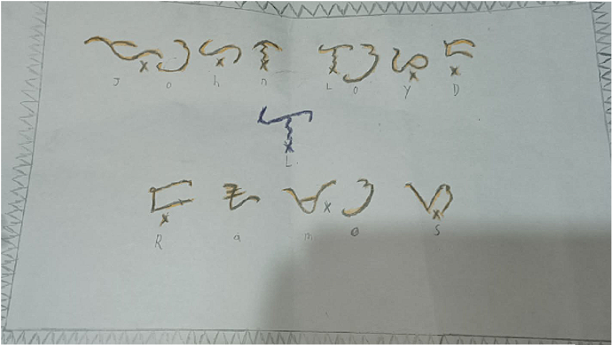
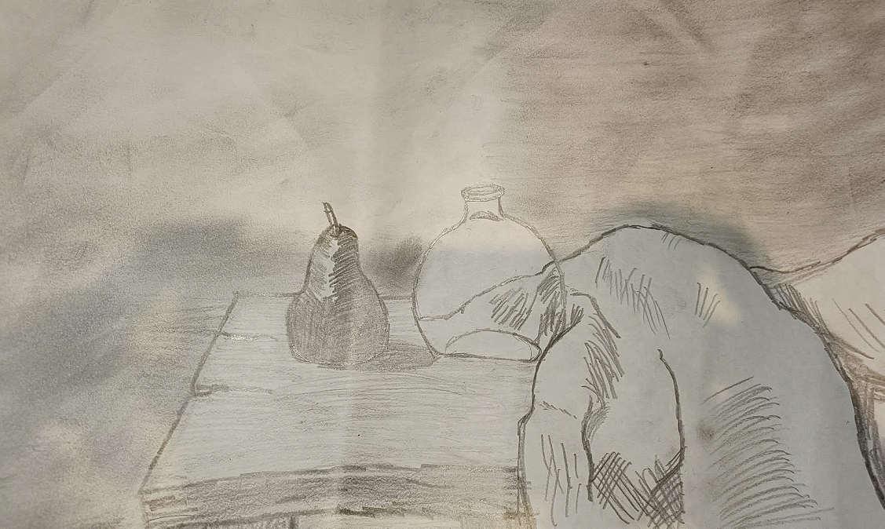
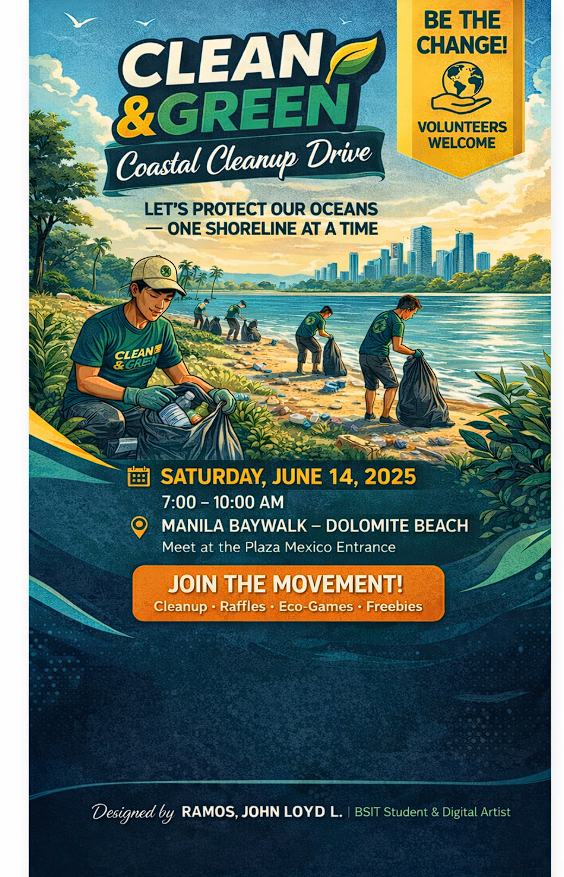
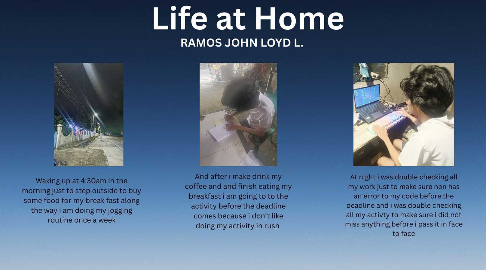

John Loyd L. Ramos BSIT-2G johnloyd.ramos@itstudent.edu +63 912 345 6789
✦ Artist Statement
As an aspiring IT professional, I believe visual literacy is key to designing effective digital experiences. This portfolio showcases my exploration of visual language — from digital collage to observational drawing, abstract composition, Filipino patterns, and an infographic on computer vision in art.
— John Loyd L. Ramos, BSIT-2G, 2025
📸 Module 1 · Digital Visual World Collage
🌆 Urban Pixel Weave

Digital collage ng mga fragment ng lungsod, glitch, at found imagery.
✍️ Module 2 · Observational Drawing
Observational Study

Observational drawing study focusing on line, shape, form, space, texture, value, and color.
🎨 Module 3 · Abstract Composition
Abstract Artwork

"Rhythm of Noise" – acrylic & digital abstraction.
🔄 Module 4 · Transformation Series (Final Version)
Mythical abstraction

Final transformation – symbolic narrative
🇵🇭 Module 5 · Filipino-Inspired Pattern Design
🌾 Inaul & Okir motifs

Traditional "Panulukan" pattern – inspired by Mindanao textile.
🖌️ Modules 6–7 · Drawing / Painting Artwork
+ charcoal rendering

"Silent Canopy" – charcoal on paper.
📢 Module 8 · Digital Poster
“Visual Literacy Matters”

Advocacy poster: semiotics & visual culture.
📷 Module 9 · Photo Narrative Series
Morning routine · Jogging · School tasks

Daily life photo narrative: early morning routine, jogging, and checking school activities.
Narrative: Waking up with the sunrise, a mindful jog through the park, then settling down to browse modules and school updates. Visual storytelling of a productive student day.